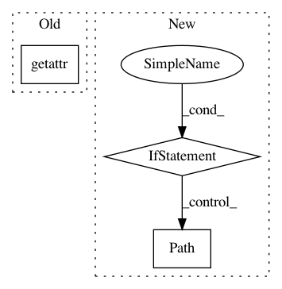

fc6a17128062165de4776a563f62e60df2461c2a,ilastik/applets/dataSelection/datasetInfoEditorWidget.py,DatasetInfoEditorWidget,accept,#DatasetInfoEditorWidget#,236
Before Change
new_display_mode = self.displayModeComboBox.currentData() or info.display_mode
new_info_class = self.storageComboBox.currentData() or info.__class__
if new_info_class == ProjectInternalDatasetInfo:
project_inner_path = getattr(info, "inner_path", None) or self.serializer.importStackAsLocalDataset(
abs_paths=info.expanded_paths, sequence_axis=info.sequence_axis
)
info_constructor = partial(ProjectInternalDatasetInfo, inner_path=project_inner_path)
After Change
inner_path=project_inner_path,
project_file=project_file,
)
elif new_info_class == UrlDatasetInfo:
info_constructor = partial(UrlDatasetInfo, url=info.url)
else:
new_internal_path = self.internalDatasetNameComboBox.currentText()
if new_internal_path:
filePath = os.path.pathsep.join(Path(ep) / new_internal_path.lstrip("/") for ep in info.external_paths)
else:
filePath = info.effective_path
In pattern: SUPERPATTERN
Frequency: 3
Non-data size: 3
Instances
Project Name: ilastik/ilastik
Commit Name: fc6a17128062165de4776a563f62e60df2461c2a
Time: 2020-04-27
Author: tom.fogaca@gmail.com
File Name: ilastik/applets/dataSelection/datasetInfoEditorWidget.py
Class Name: DatasetInfoEditorWidget
Method Name: accept
Project Name: deepmipt/DeepPavlov
Commit Name: 286a864220a00732d382a75051e11877acf13c3f
Time: 2018-01-24
Author: ol.gure@gmail.com
File Name: deeppavlov/models/tokenizers/nltk_tokenizer.py
Class Name: NLTKTokenizer
Method Name: __init__
Project Name: ilastik/ilastik
Commit Name: 41d9e8fdbbf8ae4d6f93bb061603831c0608d394
Time: 2020-05-13
Author: tom.fogaca@gmail.com
File Name: ilastik/applets/dataSelection/datasetInfoEditorWidget.py
Class Name: DatasetInfoEditorWidget
Method Name: accept